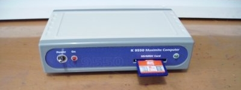
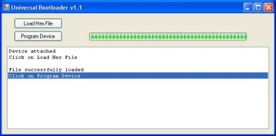
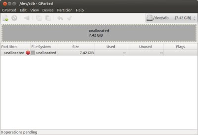
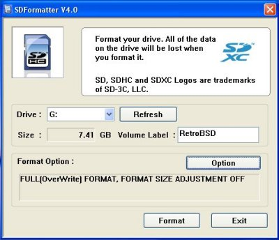
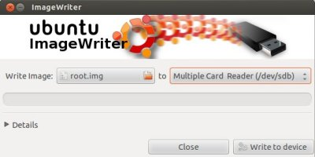
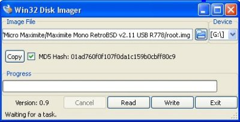
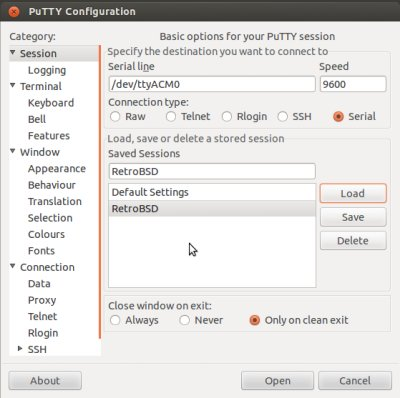
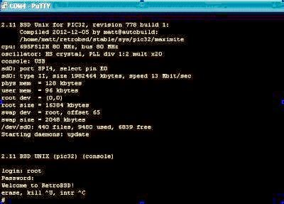
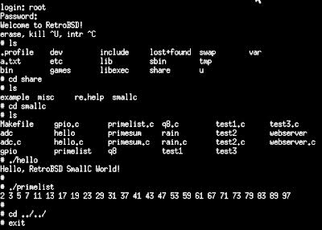

Worthington's Workshop
Computers - RetroBSD Operating System
|
|
Running a compact text only RetroBSD v2.11 system on a Maximite Microcomputer is an interesting and rewarding experience. An Overview of the system : Russian Serge Vakulenko wrote the code for the implementation of BSD v2.11 for the PIC-32 microcontrollers. There are also other programs available for the Maximite - a very useful version of Basic is pre installed on the chip. Basic is available from from the Geoff Graham Maximite website and can be simply bootloaded for updating or reinstallation. The SmallBSD v2.11 Unix system is an interesting adventure and will lead to further projects and education. If you want to upscale into a full Unix graphic environment on a PC, there is also FreeBSD and PC-BSD which I also run. Links : The main RetroBSD web page. Do not download the files: The Main RetroBSD website Google forums and Wikis. Do not download the files: The Google RetroBSD project The up-to-date download site for autobuilds of the software: RetroBSD Autobuild Server Screenshots of working programs: RetroBSD on Maximite Books : 1. The Unix Programming Environment - Kernighan and Richie - Prentice Hall 2. The C Programming Language (2nd Edn - ANSI C) - Kernighan & Richie - Prentice Hall 3. BSD UNIX Toolbox - Negus & Caen - John Wiley & Sons All books are available at The Book Depository, UK  The Monochrome Maximite Microcomputer 1. A Maximite Computer kit: Jaycar sell the Mini-Maximite: Mini-Maximite Monochrome, Altronics sell the three versions: Maximite Monochrome, Maximite Colour, Mini-Maximite Monochrome 2. A Windows PC to upload the software, then a Linux/Unix/Mac/Windows PC used as a dumb terminal 3. A USB SD Card Reader, or a Digital Camera used as a SD Card Reader. This is available from Jaycar and works equally well under Linux and Windows. Compact Multi-Card Reader 4. An SD card of 4Gbyte capacity and a speed of 6 or better. Verbatim and Sandisk cards work faultlessly. These are available from the local Woolworths or Coles stores as used for Digital Cameras. Avoid the Dolphin brand. 5. A USB cable to connect between the PC and the Maximite: Use a USB 2.0 Std A Plug to USB 2.0 Std Mini 5 pin Plug. You probably have one already for your digital camera. This is available from Jaycar or Altronics USB Cable The kits are quite easy to build as the surface mount components are already mounted. The Mono take 1.5 hours, The Colour takes 2.0 hours and the Mini only takes 15 minutes. A Maximite Monochrome computer would be the easiest at getting a system up and running. Being a minimalist and do-it-yourself enthusiast, I did all the development on the MiniMaximite and had a lot of fun. NB: the MiniMaximite requires a separate 3.3volt regulated supply to operate, unlike other versions with onboard supplies. To reduce the 5 volts from the USB input, my home made MiniMaximite support board contains a 3.3volt regulated supply. The LM3940 regulator is available as a 3 lead IC from Jaycar, set up as per an LM7805 pinout and circuit. LM3940 3.3V Regulator There are several files required to get the system up and running: 1. The unix.hex file which is loaded into the microcontroller to bootload the system - think of this as a BIOS. 2. The root.img file which is loaded onto an SD card, and contains the RetroBSD operating files - think of this as a hard drive OS. 3. Bootloader to upload the unix.hex file to the micro from a Windows PC - cannot yet be done under Linux. 4. SD Card Formatter to format the SD card to accept the Unix file system. 5. SD Card Image Installer to load the SD card with the root.img Unix Image file. 6. USB SSH Client Terminal software to communicate with the headless micro. 7. The USB driver for a Windows PC to allow the USB to Serial converter to allow Putty to talk to the micro. Only required by Windows. At present a Windows PC is required to load the software onto the Micro and the SD card. Once loaded a Linux, Unix, Mac or Windows machine will suffice as a dumb terminal. NB : Commands, filenames and foldernames require removal of the single quote signs, all commands require the [Enter] key to be pressed 1&2. Operating System files Go to the up-to-date download site at RetroBSD Autobuild Server. On the right hand Latest Stable Build column, Click on 'maximite-778.hex.bz2' and save the file to your download directory. On the right hand Latest Stable Build column, Click on 'sdcard-778.rd.bz2' and save the file to your download directory. Create a new folder titled 'RetroBSD' and copy the two downloads into it. Use your uncompression software to expand the files into their constituent files. Ubuntu Linux 12.04 uses File Roller 3.4.1 Archive Manager for Gnome to extract the files. It is launched by clicking on the compressed file and once launched, clicking on 'Extract". Rename the extracted files 'maximite-778.hex' to 'unix.hex' and 'sdcard-778.rd' to 'root.img'. I found this out by accident after examining earlier non working versions. Be sure to use all lower case. 3. Bootloader 3a. Linux Bootloader not available: One suggestion would be to use the Windows Bootloader operating under the Wine compatibilty layer within Linux. 3b. Windows Bootloader: Download the Bootloader executable file obtained from the Geoffs Projects website BSD Unix for the Colour Maximite. It is from a later unstable version 891 of RetroBSD for the Colour Micromate, but the bootloader works without a problem Click on 'Other Downloads/BSD Unix for the Colour Maximite/Download' and save the file to your download directory. Place the resultant file 'retrobsd-maxcolour-r891.zip' into the 'RetroBSD' folder. Use your uncompression software to expand the download into its constituent files. Only use the Windows executable file 'Bootloader.exe' and delete the other extracted files. 4. SD Card Formatter 4a. Linux GParted Partition Manager: Install GParted directly from your Linux Repository. You could also install KDE Partition Editor if you use a KDE desktop. 4b. Windows SD Card Formatter: Download SD Formatter v4.0 from the SD Association Download page SD Formatter 4.0 for Windows Download. Click on Article 8 of the EULA [I Agree] and save the file to your download directory. Place the resultant file 'SDFormatterv4.zip' into the 'RetroBSD' folder. Use your uncompression software to expand the download into its extracted file 'setup.exe". Click on the file 'setup.exe' to install the program on your system as 'SD Formatter'. 5. SD Card Image Installer 5a. Linux Ubuntu Imagewriter: Install Imagewriter directly from your Linux Repository 5b. The WIN-32 Disk Imager (Windows): Use the Bootloader executable file obtained from the Geoffs Projects website WIN32 Disk Imager The download will start automatically after 4 seconds. Save the file to your download directory. Place the resultant file 'win32diskimager-v0.9-binary.zip' into the 'RetroBSD' folder. Use your uncompression software to expand the download into its constituent files. The Windows executable file is 'Win32DiskImager.exe". Be sure to keep keep all the other extracted driver files. 6. USB Server Software 6a. Linux/Unix PuTTY SSH Client: Install PuTTY SSH Client directly from your Linux or Unix Repositories. 6b. Windows PuTTY USB Server: Download PuTTY version 0.63 For Windows on Intel x86 from the PuTTY Download Page PuTTY Download Page. Click on 'putty.exe' and save the file to your download directory. Place the resultant file 'putty.exe' into the 'RetroBSD' folder. 7. USB Driver 7a. Linux not required 7b. Windows USB Driver: Use the USB Driver file obtained from the Geoffs Projects website Windows Serial Port Driver Click on 'Other Downloads/Windows Serial Port Driver/Download' and save the file to your download directory. Place the file 'Silicon_Chip_USB_Serial_Port_Driver.zip' into the 'RetroBSD' folder. Use your uncompression software to expand the download into its constituent files. Read the PDF file 'Installing the USB Serial Port Device Driver.pdf' to install the driver. Install the driver file 'mchpcdc.inf' as per the instructions. 1. Upload the Bootload file to the Maximite memory: 1a. Windows Bootloader A Windows PC must be used, as some of the programs are not yet available for Linux/Unix  Windows Bootloader screen Plug the USB cable into the PC USB port. Open the case of the Maximite. On the Maximite, hold the Bootload pressbutton down and then insert the USB cable. Release the button and ensure the onboard LED is flashing. This means the Maximite is ready to be bootloaded. Navigate to your 'RetroBSD' folder and click on 'BootLoader.exe' to launch the Bootloader. On the Universal Bootloader v1.1 Main Menu ensure the 'Device Attached' message is present, otherwise replug the Maximite as above. Click on [Load Hex File] and navigate to your RetroBSD folder. Select 'unix.hex' and then click on [Open]. On the Universal Bootloader v1.1 Main Menu click on [Program Device] and wait for the message 'Verify Completed. No Errors Found". Click on [X] to close the bootloader. Select 'unix.hex' and then click on [Open]. Use the 'Safely Remove' icon on the bottom toolbar to remove the USB cable from the Maximite. Replace the cover on the Maximite Case and replug the USB cable into the Maximite to initialise the Unix system. 2. Format the SD Card: 2a. Linux GParted Partition Manager  Linux GParted screen Insert the SD Card into the SD Card Reader and plug in the SD Card Reader to a USB port on the computer. On the PC click on the GParted icon under [Applications/System Tools/Administration/GParted Partition Editor]. A Password Authentication pop-up window will ask for your password. Enter password and click [Authenticate]. GParted will now do a refresh to search for all mounted drives. Warning: The first screen will have the partition setup for your master hard drive. Under no circumstances edit it. Click on [GParted/Devices/] and select [dev/sdb] for the removable SD card drive. Click on each graphic blocks and select [Partition/Delete/] until every partition is deleted. The complete file system should be marked as 'unallocated' with an indication of the complete SD card memory size. Click on the graphic block and select [Partition/New/] so that a 'Create New Partition' Window pops up. Create the new partion as: 'Free space preceding (MiB): [1], New size (MiB) = maximum value obtainable by arrow on indicator, Free space following (MiB): [0], Align to: [MiB], Create as: [Primary Partition], File system: [fat32], Label [ ]. Click [Add] and you now have a FAT32 formatted SD card. The previous changes will not be done until you click on the Green Tick, an icon for [Edit/Apply All Operations]. A warning pop up window will ask if you want to proceed. Click [Apply] to complete every operation. Click [Close] on the completion notification pop up window. Leave the SD Card in the SD Card Reader for the next step. 2b. Windows SDFormatter  Windows SDFormatter screen Insert the SD Card into the SD Card Reader and plug in the SD Card Reader to a USB port on the computer. On the PC click on Start/My Computer to identify the drive letter [D: or F:, G:] for the SD Card Reader. It will usually be the last device in 'Devices with Removable Storage' and identified as 'Removable Disk". Navigate to your 'RetroBSD' folder and click on 'SDFormatter.exe' to launch the formatter. On the SD Formatter menu select the [Drive] (usually identified already) and click [Refresh], [Volume Lable] = 'RetroBSD". [Option/Format Type] = 'FULL (Overwrite)", [Option]/[Format Size Adjustment] = 'OFF", Click [OK]. Click [Format], Click [OK] on the Warning pop-up then wait a couple of minutes while the card formats. When the Completed Information pop-up appears click [OK] and on the Main Menu click [Exit]. Leave the SD Card in the SD Card Reader for the next step. 3. Upload the Unix Image file onto the SD card: 3a. Linux Image Writer  Linux Image Writer screen On the PC click on the Imagewriter icon under [Applications/Accessories/Imagewriter]. A Password Authentication pop-up window will ask for your password. Enter password and click [Authenticate]. Select 'Write Image' and navigate to the 'RetroBSD' folder where you keep your 'root.img' file then double click on the filename. Click the 'To' space and ensure [Multiple Card Reader (dev/sdb/)] appears. You may need to double click to ensure the [Write to Device] message appears. Click on [Write to Device]. When the Warning pop up window appears, click on [OK]. When the load is complete (within a second) a Success pop up window will appear. click on [OK]. Remove the SD Card Card Reader from the PC and insert the SD Card into the SD Card Slot on the Maximite. 3b. Windows Win32 Disk Imager  Windows WIN-32 Disk Imager screen Navigate to your 'RetroBSD' folder and click on 'WIN32DiskImager.exe' to launch the Disk Imager. Click on [Device] and select the correct USB Drive letter (usually identified already). Click on [Image File] and navigate to your 'RetroBSD' folder and select the 'root.img' file. Click on [MD5 Hash] and wait a second or two for it to generate, then click on [Write]. Click [YES] on the Confirm Overwrite pop-up then wait a few seconds for the upload. Click [OK] on the Complete pop-up then click on [Exit] on the Main Menu. Use the 'Safely Remove' icon on the bottom toolbar to remove the SD Card Reader from the PC. Remove the SD Card from the SD Card Reader and insert it into the SD Card Slot on the Micromite. 1. Initialising the Session:  Linux PuTTY SSH Client screen Any PC may be used as the PuTTY program is available for Linux, Unix, Mac and Windows. Plug the USB cable into the PC USB port and plug the USB cable into the Maximite to initialise the Unix system. On a Windows PC, navigate to your 'RetroBSD' folder and click on 'PuTTY.exe' to launch the Bootloader. On a Linux/Unix PC, navigate to Applications/Internet/Putty SSH Client and click on the icon On the PuTTY Configuration Menu set [Connection Type] click [Serial], [Speed] = '9600". On Windows select [Serial Line] = COM4, On Linux select [Serial Line] = '/dev/ttyACM0'. [Saved Sessions] = 'Maximite", [Close Window on Exit] click '[Only on Clean Exit]. Click on [Save], Select 'Maximite' and click [Open]. Select 'Maximite' and click [Open]. If it works correctly you will open a quarter screen sized window with a cursor. Press [Enter] on your keyboard. The Unix system will then initialise with details of the system - see the screenshot above. If the window fails to appear, it is because the [Serial Line] selection is incorrect; reselect another port. 2. Running and Exiting the Session:  RetroBSD v2.11 rev778 boot up There is now a fully functioning Unix system running on your Maximite and appearing on your PC as a dumb terminal. At the [login:] command type 'root' (in lower case letters) and press [Enter], At the [password:] command press [Enter]. You have now become the Unix session user. Congratulations! You are at the root directory. To exit the session type 'exit' at the '#' prompt. Use the 'Safely Remove' icon on the bottom toolbar to remove the USB cable from the PC. 3. Initial Steps to Executing a Program: The session begins at the root directory, the main directory in the Unix directory tree. Always hit 'Enter' after each command. There are three Unix commands to start off with - 'filename' to execute a program, 'ls' to display a directory and 'cd directory_name' to enter a sub directory plus 'cd ..' to enter a directory closer to root. One problem due to the simplicity of the tightly coded system is that the file names are indistinguishable from the directory names. You cannot 'cd' to a filename as you get an error message 'bad directory". I always 'ls' after a 'cd' to see what files are available. 4. A Sample Program: At the root directory, type 'ls' to see the games directory, type 'cd games", type 'ls' to see the available games files. At the games directory, type 'banner "Hello World"' to execute the banner program, as seen in the screendump above. To return to root, type 'cd ..'[Enter]. 5. The C programming environment:  Small C running 'hello' and 'primelist' The C programming environment is complete and includes an editor compiler and make file: At the root directory, type 'cd share/smallc/', to enter the 'smallc' subdirectory. Type 'ls' to see the available C source files (file_name.c). Type 'make' to convert them all to executable files, or type 'make file_name.c' to make a single file executable. Type './file_name' to launch an executable file. Type './hello' to be rewarded with the "Hello, SmallC World!" text To edit the files use the re editor. Launch this initially with 're' to see the help file, or 're file_name.c' to edit a file. When done, type 'cd ../../' to return to the root directory. To exit the session type 'exit' at the '#' prompt. Use the 'Safely Remove' icon on the bottom toolbar to remove the USB cable from the PC. |